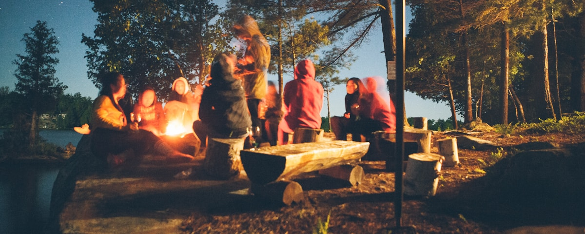
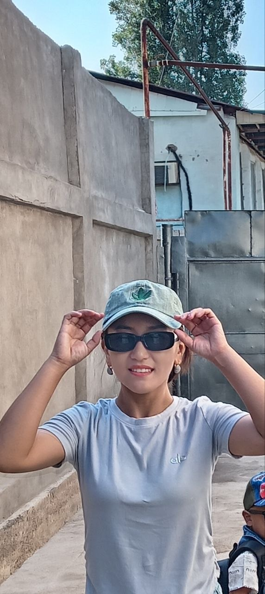
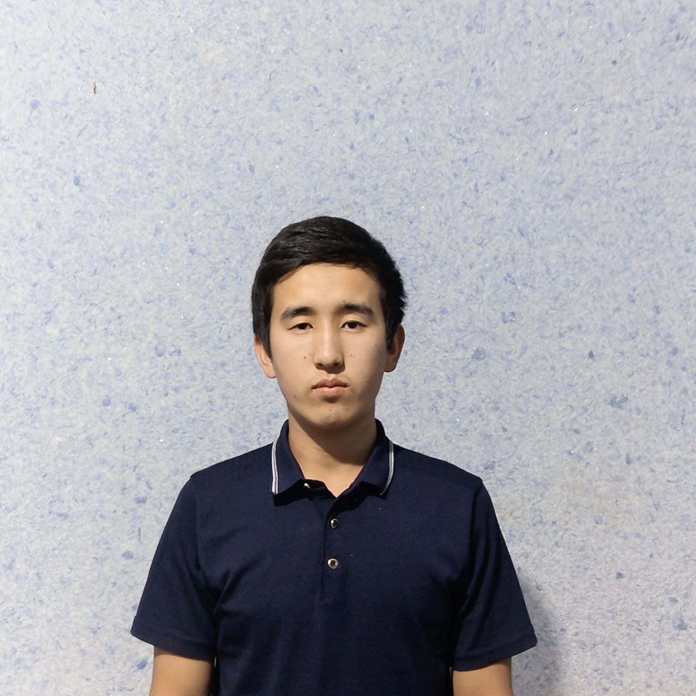

Oila a'zolari

Veola kamoaniyasida hozirda santexnik bolib ishlab kelmoqda.PDP juniorga kelishimga ham adam sababli
hozirada ozini sohasi boyicha 15 yildan beri ishlab kelmoqda ve men uchun eng zor ona.

Psixologiya yo‘nalishida tahsil oladi va menga har doim yordam beradi.

o‘qiydi va robototexnikaga qiziqadi.